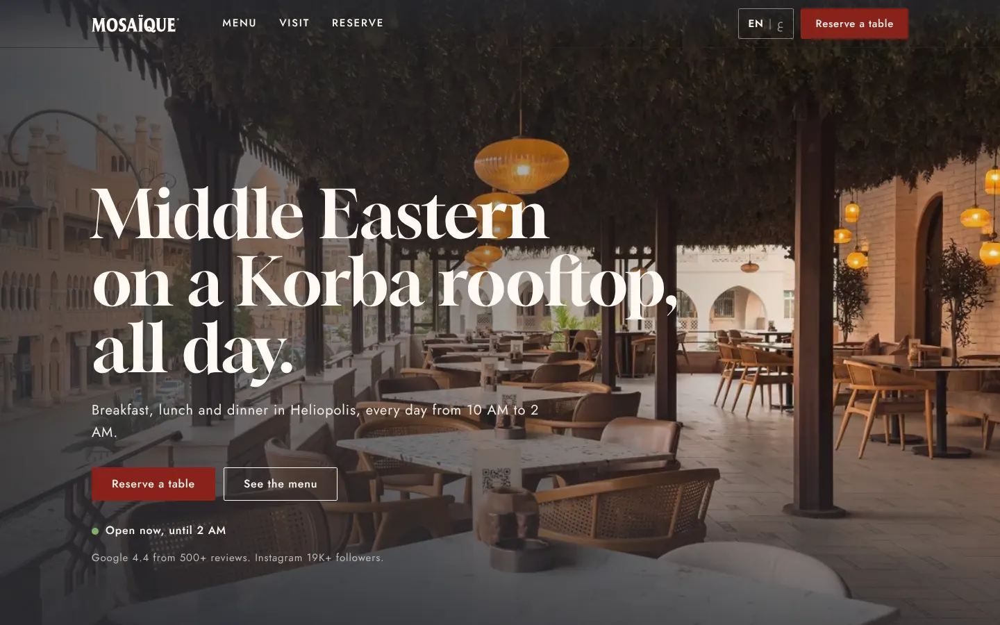
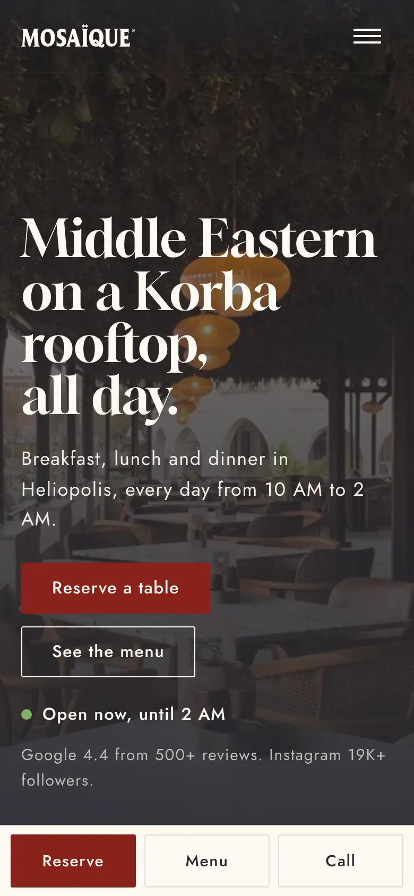
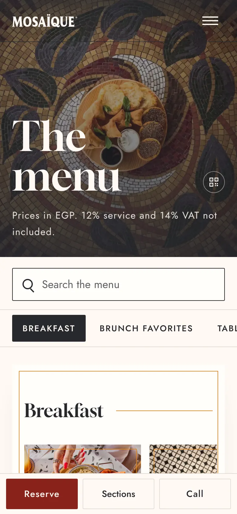
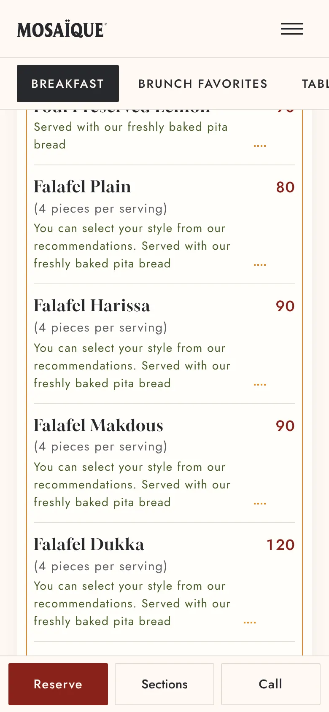
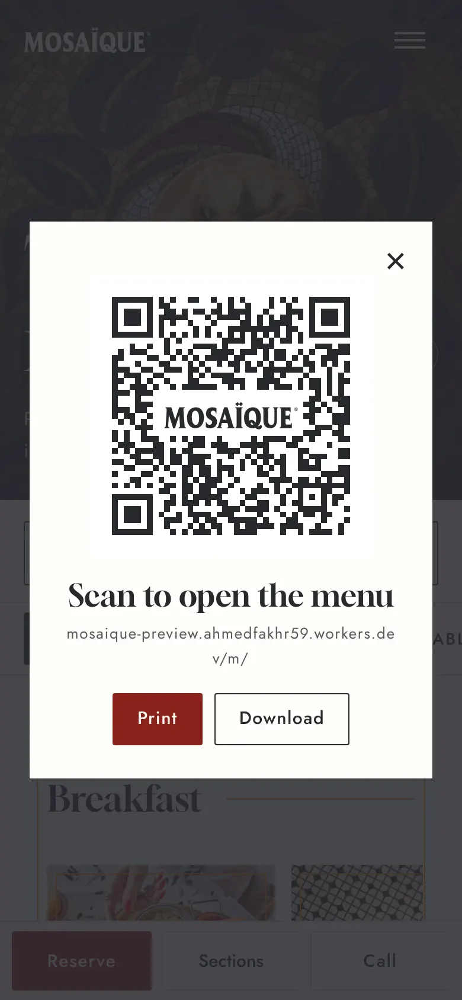
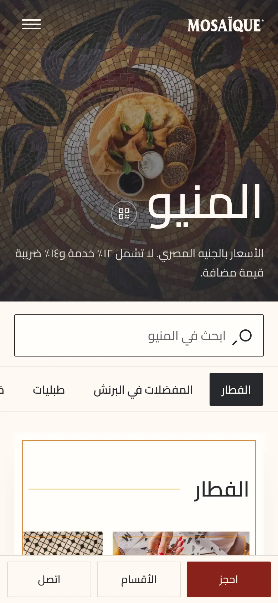
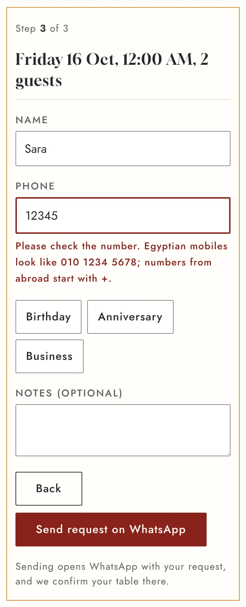

Case study · Restaurant website · 2026
Mosaïque had a strong brand, great photos and 19K Instagram followers, but no website. Guests reached the menu through a PDF link in the Instagram bio. I built a bilingual site that opens in about a second on a phone, a menu the staff update from a Google Sheet, and a table QR code that lands straight on it.

Almost every visitor arrives on a phone, many from a QR code on the table. The old route asked them to download a long PDF over mobile data.
A guest scanning a table QR code should see the menu before they lose interest. These are the numbers for the menu page.
PageSpeed Insights, mobile: score 97, Largest Contentful Paint 2.0 s, layout shift 0, blocking time 0 ms. Slow connection = 1.6 Mbps with 150 ms latency, measured in Chromium.






The same setup works for any café or restaurant: your brand, your menu in a sheet you already know how to use, and a site that is fast on every phone.